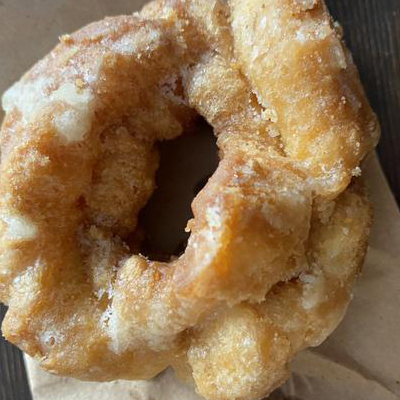
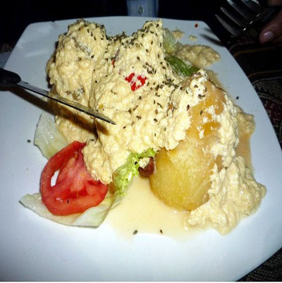
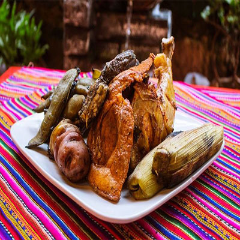
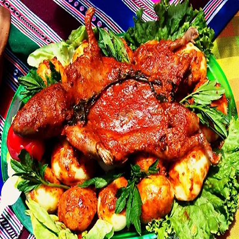
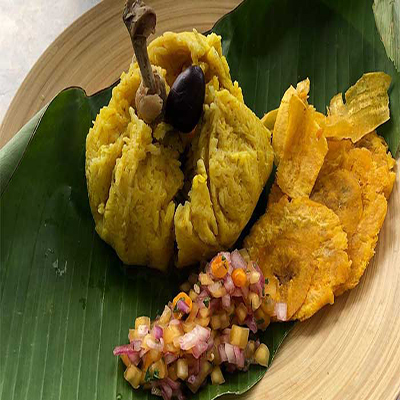
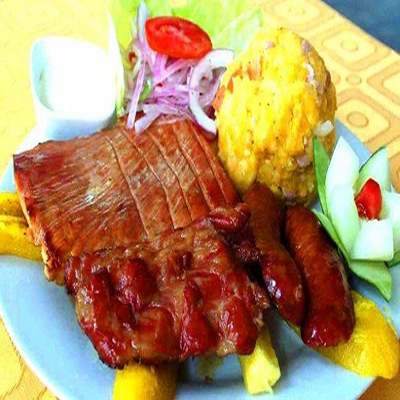
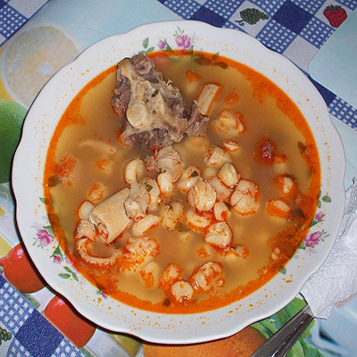
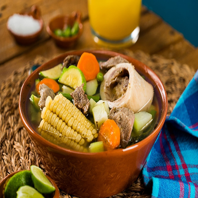

BIENVENIDOS A HUÁNUCO
También conocida como la ciudad de los caballeros de León, Huánuco es considerada como uno de los lugares del Perú con el mejor clima. ¡Decídete y ven!
ExplorarAcerca de huánuco
Huánuco es un departamento de la República del Perú ubicado en el centro norte del país, con capital en su ciudad más poblada: la homónima Huánuco. Limita al norte con La Libertad y San Martín, al norte y este con Loreto y Ucayali, al sur con Pasco, al oeste con Áncash. Y se ubica al Noreste de Lima.
En la mayor parte de su territorio, comprende una porción de la vertiente oriental cordillera de los Andes surcada por los ríos Marañón y Huallaga y una parte del llano amazónico al este en la provincia de Puerto Inca. El tercio suroccidental corresponde a la región de la sierra, mientras el resto del departamento está cubierto por la selva amazónica. Recibe su nombre en referencia a su capital y sede regional: la ciudad de Huánuco fue fundada el 15 de agosto de 1539. Tras la independencia, fue designado como departamento el 24 de enero de 1869.
VolverDANZAS TÍPICAS
| Danza | Descripción | Video |
| Negritos | Durante la época de la Colonia, los patrones daban libertad a los esclavos desde el 24 de diciembre hasta el 6 de enero. Esos días eran aprovechados por los esclavos para celebrar la Navidad y visitar los nacimientos que lucían en las casas de las familias más pudientes. A partir del Decreto promulgado por Ramón Castilla sobre la libertad de los negros el 13 de diciembre de 1856, las cofradías hicieron su aparición en las calles, visitando no solo los nacimientos sino también las iglesias, donde bailaban y bebían. Los dueños de los nacimientos en recompensa les invitaban huarapo, shacta. Así lo hicieron los años sucesivos y de esta manera se institucionalizó el baile y Danza de los Negritos. Con el paso de los años, los hombres de color fueron extinguiéndose, por lo que fueron reemplazados por los mestizos y luego por los blancos. Como la danza era de negritos, éstos tuvieron que confeccionar máscaras, Esta Danza es constituida Peruana. | |
| Tuy-Tuy | La danza del Tuy Tuy representa vivencias que forman parte de la memoria colectiva de los portadores, pues se sitúan en relación a su propio entorno social y geográfico. Los cultores de esta expresión señalan que la danza habría surgido como una evocación de los enfrentamientos entre tropas chilenas y pe-ruanas en la zona de Huamalíes, durante la Guerra del Pacífico, y que estas eran integradas por pobladores del lugar. Estos apuntes se encuentran en las investigaciones de Olivares y Taboada, los cuales señalan que la danza representa a los soldados peruanos que, viendo su desventaja numérica frente a los chilenos, usaban prendas llamativas para aparentar tener un mayor número de soldados y causar sorpresa al rival. La comparsa del Tuy Tuy está integrada por danzantes varones y un músico o cajero, quien toca el pinkullo (instrumento de viento) y la caja (tambor grande), cuyos sonidos marcan el compás y transmiten energía a cada parte de la danza. Los danzantes, alineados en dos columnas, cruzan sus bastones y broqueles haciendo alusión al enfrentamiento, mientras los cascabeles que llevan atados a las piernas, resuenan por el zapateo constante y realzan los movimientos. | |
| Jija Ruku | Jija ruku proviene de dos palabras quechuas: jija, que procede de la palabra hirka (montaña sagrada) y ruku, vocablo que nombra al varón anciano. Así, el personaje central de la danza es un anciano vinculado al cerro sagrado, una figura mítica y tutelar. De acuerdo a la tradición, el ruku es un intermediario entre el mundo divino y el mundo de los humanos, lo que le otorga a la danza un carácter ancestral. Asimismo, el ruku expresa la cohesión de la comunidad mientras que la danza posibilita vínculos positivos entre la comunidad y los otros pueblos del distrito de Llatas. La coreografía de la danza es parsimoniosa y se acompaña de una música de ritmo pausado que se intercala con tonadas ligeras ejecutadas por un músico conocido como ?cajero?. Para ejecutar la danza intervienen 20 bailarines, quienes danzan en dos columnas. La representación está compuesta por dos momentos principales: el desplazamiento de la comparsa (pasacalle) y el desarrollo de diversas figuras coreográficas. | |
| Tatash | Esta danza revela en todo su proceso, escenas originales de la actividad agrícola, tales como: localización de tierras, roturación, eliminación de malezas, siembra, cuidado y conclusión de la faena. Se advierte también, las costumbres de aquel pasado, el ayni y la minka, ya que participan en la comparsa, ancianos, jóvenes y niños con tareas específicas y provistas de típicos objetos que representan a las herramientas que se emplean en la siembra. |
Gastronomía
|  Prestiños |
 Picante de queso |
 Pachamanca de cerdo |
 Picante de cuy |
|  Juane |
 Tacacho con cecina |
 Patasca |
 Puchero |